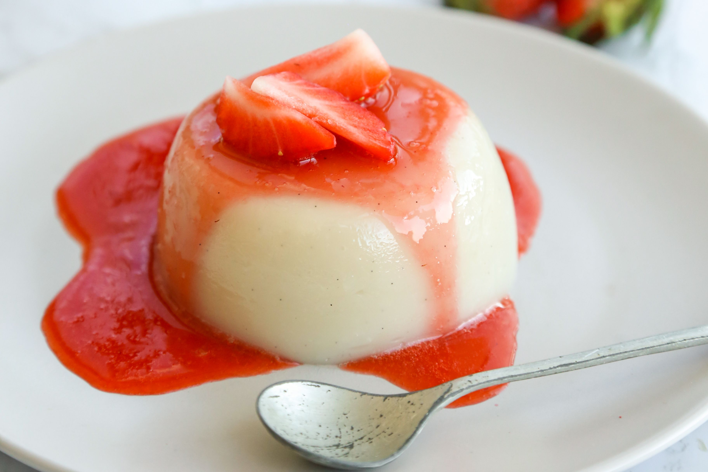

Almond Pudding

Description of Almond Pudding Recipe:
Sweet and silky almond pudding is always a nice dessert to close a hearty meal.
Ingredients:
Surprisingly little ingredients are needed for a basic almond pudding!
- Almond Pudding Agar Powder
- Chopped / canned fruits (mangoes, strawberries)
- 350ml of water
Steps
- Pour all the water into a pan and heat it up for 3 minutes
- Pour almond pudding agar powder into the water. Stir gently for 7 minutes.
- Once 7 minutes are up, pour the almond pudding mixture into your preferred container. Let the mixture rest for 5 minutes.
- Refrigerate for 2 to 3 hours.
- When ready to eat, serve with chopped fruits for a more refreshing palette.